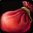
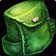
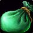

هاتفیکسهای ۱۱ نوامبر ۲۰۲۶: تغییر ظرفیت و هزینه ساخت کیفهای Tailoring
جدیدترین هاتفیکسهای بازی با تغییر در هزینه ساخت و ظرفیت کیفهای خیاطی، غیرفعال شدن موقت Item Restoration و اصلاحاتی برای چندین کلاس همراه شده است.

شرکت Blizzard فهرست تازهای از هاتفیکسها را برای تاریخ ۱۱ نوامبر ۲۰۲۶ منتشر کرده است که علاوه بر تغییر در هزینه و فضای کیفهای رشته Tailoring، شامل رفع باگهای مربوط به کوئستها، موجودات محیطی و کلاسها میشود.
بخش پشتیبانی اعلام کرده است که سرویس Item Restoration موقتاً و تا زمان بررسی و رفع یک باگ بحرانی غیرفعال خواهد بود.
تغییرات کیفهای حرفه Tailoring
مواد اولیه و فضای اسلات برخی از کیفها که به اشتباه کوچکتر از حد تعیینشده بودند، بازنگری شده است. ساخت این کیفها اکنون به پارچه بیشتری نیاز دارد اما اسلات بیشتری ارائه میدهند:
- کیف

Red Mageweave Bag: نیازمند ۵ عدد bolt of mageweave (قبلاً ۴ عدد) و دارای ۱۴ اسلات - کیف

Green Silk Pack: نیازمند ۵ عدد bolt of silk (قبلاً ۴ عدد) و دارای ۱۲ اسلات - کیف
 Black Silk Pack: نیازمند ۶ عدد bolt of silk (قبلاً ۵ عدد) و دارای ۱۲ اسلات
Black Silk Pack: نیازمند ۶ عدد bolt of silk (قبلاً ۵ عدد) و دارای ۱۲ اسلات - کیف

Green Woolen Bag: نیازمند ۵ عدد bolt of wool (قبلاً ۴ عدد) و دارای ۱۰ اسلات - کیف Red Woolen Bag: نیازمند ۵ عدد bolt of wool (قبلاً ۴ عدد) و دارای ۱۰ اسلات
تغییرات و اصلاحات کلاسها
- کلاس Druid شاخه Feral: تلنت Rend and Tear اکنون روی Bleed حاصل از Pounce اعمال میشود.
- کلاس Hunter: مشکلی که در آن Volley باعث فعالشدن اثرات جانبی (procs) میشد برطرف شد؛ همچنین ادامه چنل این اسپل پس از شروع حرکت هانتر رفع شده است.
- کلاس Paladin: قابلیت Judgement اکنون حمله از راه دور (Ranged Attack) محسوب میشود؛ بنابراین دیگر Melee به شمار نمیرود و وابسته به Ranged Hit chance است. در شاخه Retribution نیز Unsealed Fury دیگر از حملات Windfury Totem پژواک (echoes) تولید نمیکند.
- کلاس Priest: قابلیت Confounding Flash نژاد Gnome و تلنت The Twilight Focus در شاخه Holy اکنون درون Shadowform به درستی عمل میکنند.
- کلاس Shaman: باگی که باعث کار نکردن Flametongue Totem رنک ۲ میشد اصلاح شد.
تغییرات موجودات و آیتمها
میزان Damage چندین موجود در Riverglades کاهش یافته است. قابلیت Smash متعلق به Twilight Enforcer به طور چشمگیری ضعیفتر شده، Damage مربوط به Executioner Morg کاهش یافته و توانایی Mark of Flames متعلق به Twilight Forgemaster به جای ۱۰۰۰ واحد، اکنون ۵۰ واحد آسیب را افزایش میدهد.
در بخش آیتمها نیز Bloody Claws of Attack به درستی ۱ واحد مهارت Fist/Unarmed Weapon میدهد و مشکل اهدای بیش از حد Spell Damage توسط Earthen Silk Slippers رفع شده است.
ماموریتها و محیط بازی
- در منطقه Western Plaguelands امکان تعامل با Command Tent در کوئست Scarlet Diversions اصلاح شد.
- در منطقه Arathi Highlands مشکل کار نکردن Witherbark Mallet در مأموریت The Giant in the Den برطرف شد.
- در منطقه Feralas عدم ریست شدن درِ قفس (Cage Door) در کوئست Freedom for All Creatures اصلاح شد.
- امکان سوار شدن بر مرکب (mount) در مناطق دارای نام در Shen’dralas که پیشتر غیرفعال شده بود، مجدداً فعال گشت.